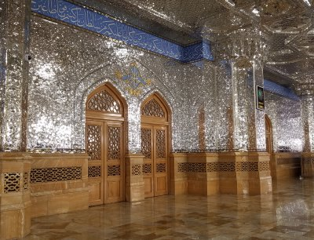

Coding with python to create a find-mode method.A watercolor project I completed of a game scene.A clay plate I designed and fired.I travelled to the ruins of Persepolis and saw Takhte Jamshid.I also travelled to Karbala to see the shrines of famous historical individuals.My travels of seeing historical sites and architecture took me to Mashhad, where I
saw this golden shrine entrance.

In this underground structure called a shabestan, I observed the mirror work on the wall
that fragmented light into an ambient glow.A UX project I completed, pitching 3 different app versions: version1A UX project I completed, pitching 3 different app versions: version2A UX project I completed, pitching 3 different app versions: version3